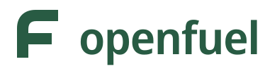
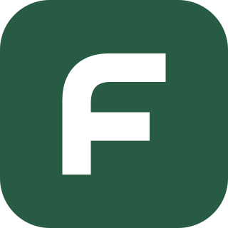
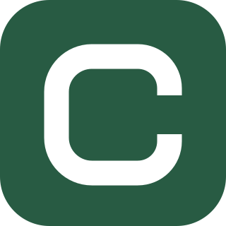

Approved direction
Open lane.

A recognisable fuel initial, with an open turn and two clear exits. One shape for the app, the map, and the name.

OpenFuelBuilt to read on an Android home screen.
On white
After dark
Small is the real test.
24 px
32 px
48 px
64 px
Broad strokes and open space stay clear without detail, colour effects, or a tiny fuel-pump illustration.
A quiet mark on a busy map.
Concept scale study. Station brand logos would remain their own identities.

Alternate direction
Open loop.
A continuous route with an open edge. A calmer symbol for “open”; less immediate as a fuel initial.